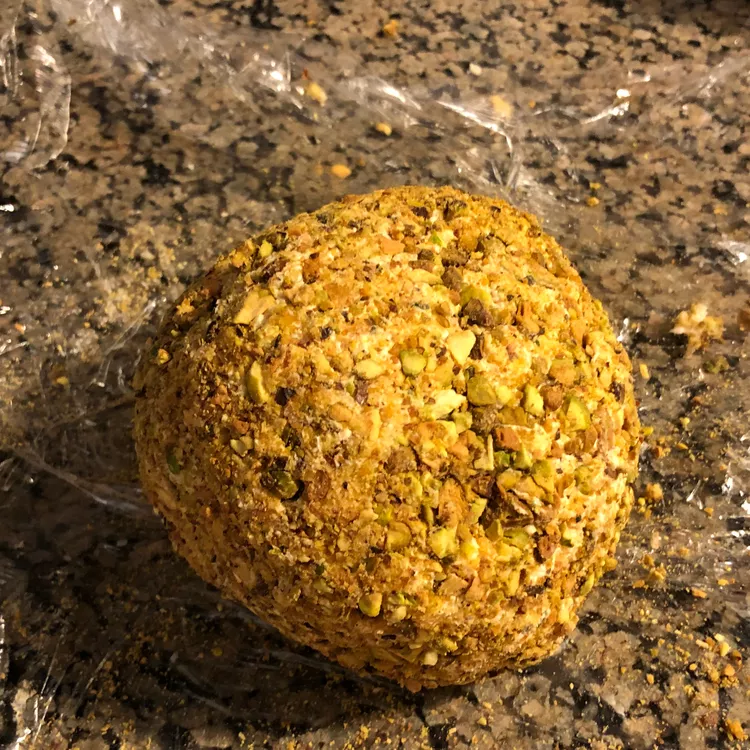

Buttermilk Ranch cheeseball

Description
This Hidden Valley Ranch cheese ball is the quickest and easiest appetizer I know of. It takes only minutes to make and can be served almost immediately. You can keep the ingredients on hand for months. Serve with buttery crackers.
Ingredients
- 1 tablespoon sour cream
- 1 ounce package ranch dressing mix
- 1/2 pound cheddar cheese
- 1/4 cup finely chopped pecans
Steps
- Mix sour cream with ranch dressing mix in a bowl until smoothly combined. Add mix cream cheese and Cheddar cheese to the bowl and mix together with your hands until thoroughly blended. Chill mixture for 5 minutes, then shape into a ball.
- Place pecans into a shallow bowl and roll all sides of cheese ball in pecans to coat.Serve immediately.
Back to home